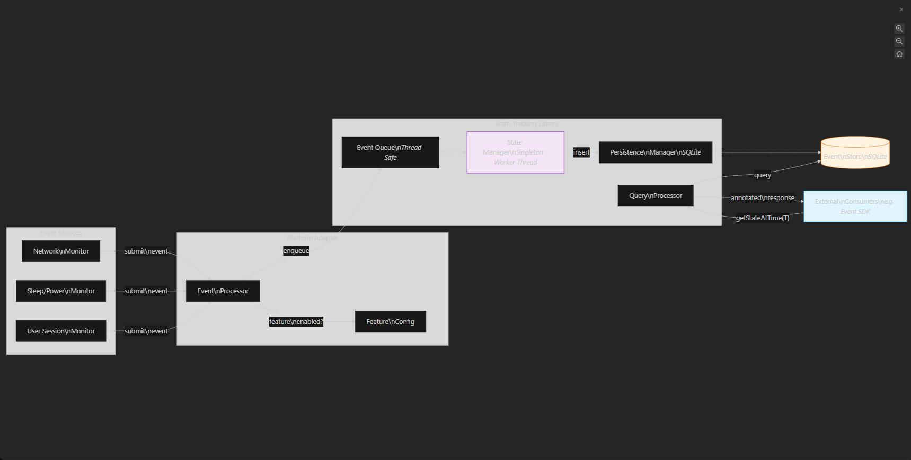

← Back to Portfolio
Annotate Telemetry Events
Production system handling telemetry signals from millions of Windows endpoints
C++
Windows Internals
Telemetry
Concurrency
SQLite
Diagnostics
What this solution does
We have telemetry events raised by different windows services from millions of devices which we use to analyze the behaviour of our product and improve as and when a trend shows anomoly.
Now there are certain noisy events which gets raised for obvious reasons like network is down, network is flapping, system is modern stand by. We wanted to filter such a noisy events
and by knowing the system state at the time when telemetry event was raised. That where this requirement came up and we built this system
Architecture Diagram

Architectural Description
- Singleton state tracking engine — monitors OS-level environment changes (network, sleep/power, user sessions) via platform-specific monitors
- Thread-safe event ingestion — state change events flow through a concurrent queue to a dedicated worker thread, decoupling producers from persistence
- SQLite-backed persistence — events are stored locally with auto-purge (max 20K rows, cleanup every 2K insertions) to bound disk usage
- Query processor — external consumers query system state at time T and receive annotated responses (network/sleep/session state + transitioning flag)
- Cloud-gated activation — library activates only when diagnostics and event annotation feature flags are enabled via cloud policy